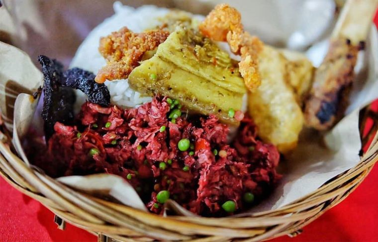

Lawar adalah masakan berupa campuran sayur-sayuran dan daging cincang yang dibumbui secara merata yang berasal dari Bali. Makanan ini lazim disajikan dalam rumah tangga di Bali atau dijual secara luas di rumah-rumah makan dengan sebutan lawar Bali. Lawar dibuat dari daging yang dicincang, sayuran, sejumlah bumbu-bumbu dan kelapa. Kadang-kadang di beberapa jenis lawar diberikan unsur yang dapat menambah rasa dari lawar itu yaitu darah dari daging itu sendiri. 